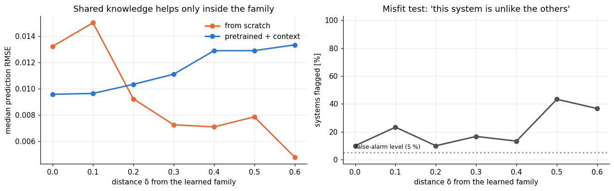

import numpy as np
import matplotlib.pyplot as plt
import dynutils
from dynutils import sample_system, simulate, multisine, predict, fit_from_scratch, adapt, rmse
dynutils.set_style()
rng = np.random.default_rng(dynutils.SEED)
COLOR = dynutils.COLOR
family, train_systems, train_data, train_fits = dynutils.build_family(rng)2. Does the pretrained model degrade, and can we detect it?
T = 120
basis_out = np.linalg.svd(family.U, full_matrices=True)[0][:, 2:] # directions the context cannot express
direction = basis_out[:, np.argmax(np.abs(basis_out[1]))] # the one that moves damping most
direction *= np.sign(direction[1]) / np.linalg.norm(direction)
in_family = []
for _ in range(60):
s = sample_system(rng); u = multisine(T, rng)
in_family.append(adapt(family, simulate(s, u, rng)[1], u)[2])
threshold = np.quantile(in_family, 0.95)
shifts = np.linspace(0, 0.6, 7)
shift_err = {m: np.zeros((len(shifts), 30)) for m in ("scratch", "context")}
flagged = np.zeros((len(shifts), 30), bool)
for i, delta in enumerate(shifts):
for n in range(30):
s = sample_system(rng)
s["eta"] = np.clip(s["eta"] + delta * direction, dynutils.LOW + 0.02, dynutils.HIGH)
u = multisine(T, rng); _, y = simulate(s, u, rng)
u_val = multisine(300, rng, n=6); q_val, _ = simulate(s, u_val, rng, noise=False)
z_, _, misfit = adapt(family, y, u)
shift_err["context"][i, n] = rmse(predict(family.decode(z_), u_val), q_val)
shift_err["scratch"][i, n] = rmse(predict(fit_from_scratch(y, u), u_val), q_val)
flagged[i, n] = misfit > threshold
fig, (ax1, ax2) = plt.subplots(1, 2, figsize=(12, 3.8))
for m, lab in (("scratch", "from scratch"), ("context", "pretrained + context")):
ax1.plot(shifts, np.median(shift_err[m], axis=1), marker="o", color=COLOR[m], label=lab)
ax1.set(xlabel="distance δ from the learned family", ylabel="median prediction RMSE",
title="Shared knowledge helps only inside the family"); ax1.legend()
ax2.plot(shifts, 100 * flagged.mean(axis=1), marker="o", color=COLOR["reference"])
ax2.axhline(5, ls=":", color=COLOR["none"]); ax2.text(0.0, 8, "false-alarm level (5 %)", fontsize=8)
ax2.set(xlabel="distance δ from the learned family", ylabel="systems flagged [%]", ylim=(-3, 103),
title="Misfit test: 'this system is unlike the others'")
plt.tight_layout(); plt.show()
print("direction of change in [k, d, b, α]:", np.round(direction, 2))
for i, delta in enumerate(shifts):
print(f"delta={delta:.1f}: scratch median RMSE={np.median(shift_err['scratch'][i]):.4f} "
f"context median RMSE={np.median(shift_err['context'][i]):.4f} flagged={100*flagged[i].mean():.0f}%")

direction of change in [k, d, b, α]: [ 0.33 0.88 -0.24 -0.24] delta=0.0: scratch median RMSE=0.0132 context median RMSE=0.0096 flagged=10% delta=0.1: scratch median RMSE=0.0150 context median RMSE=0.0096 flagged=23% delta=0.2: scratch median RMSE=0.0092 context median RMSE=0.0103 flagged=10% delta=0.3: scratch median RMSE=0.0072 context median RMSE=0.0111 flagged=17% delta=0.4: scratch median RMSE=0.0071 context median RMSE=0.0129 flagged=13% delta=0.5: scratch median RMSE=0.0079 context median RMSE=0.0129 flagged=43% delta=0.6: scratch median RMSE=0.0048 context median RMSE=0.0133 flagged=37%
As the new system leaves the family, the pretrained model gets steadily worse, while the from-scratch estimate is unaffected: it assumes nothing about the family. (Its error even decreases, since more strongly damped systems move less and are easier to predict.) With 12 s of data, from scratch is already competitive inside the family, so the pretrained model loses its advantage after a small shift.
The misfit test responds as it should. It flags about 5% of normal systems, as designed, and its detection rate rises with the shift to roughly three quarters of the systems. But detection lags degradation: at moderate shifts the adapter is already worse than from scratch, while most systems still pass the test, because the misfit is dominated by the disturbance.
This yields a simple decision rule: use the small adapter while it explains the data, and fall back to (or enlarge towards) full identification when it does not. Making such a rule both sensitive and trustworthy, with guarantees, is an open question for learned models.
Exercises
Exercise 1: A direction that stays inside the family
Repeat the shift study, but move along a direction inside family.U (e.g. family.U[:, 0] / np.linalg.norm(family.U[:, 0])) instead of direction. Does the pretrained model degrade, and does
the misfit test flag anything?
Solution
inside = family.U[:, 0] / np.linalg.norm(family.U[:, 0])
errs_inside, flags_inside = [], []
for n in range(30):
s = sample_system(rng)
s["eta"] = np.clip(s["eta"] + 0.4 * inside, dynutils.LOW + 0.02, dynutils.HIGH)
u = multisine(T, rng); _, y = simulate(s, u, rng)
u_val = multisine(300, rng, n=6); q_val, _ = simulate(s, u_val, rng, noise=False)
z_, _, misfit = adapt(family, y, u)
errs_inside.append(rmse(predict(family.decode(z_), u_val), q_val)); flags_inside.append(misfit > threshold)
np.median(errs_inside), np.mean(flags_inside)
Moving along a direction the context can represent leaves both the error and the flag rate close
to the in-family baseline, since adapt can simply find a z that reaches that part of coefficient
space — confirming that it is specifically the unrepresentable component of a shift that hurts.
Exercise 2: A stricter threshold
Recompute threshold at the 99th percentile instead of the 95th. How does the false-alarm rate on
in-family systems and the detection rate at \delta=0.3 change?
Solution
threshold_99 = np.quantile(in_family, 0.99)
delta = 0.3
misfits = []
for n in range(30):
s = sample_system(rng)
s["eta"] = np.clip(s["eta"] + delta * direction, dynutils.LOW + 0.02, dynutils.HIGH)
u = multisine(T, rng); _, y = simulate(s, u, rng)
misfits.append(adapt(family, y, u)[2])
np.mean(in_family > threshold_99), np.mean(np.array(misfits) > threshold_99)
Raising the threshold from the 95th to the 99th percentile roughly quarters the expected false-alarm rate on in-family systems (5% to about 1% by construction) but also detects fewer of the shifted systems at any given δ, since the same trade-off between false alarms and detection lag applies here as to any anomaly threshold.